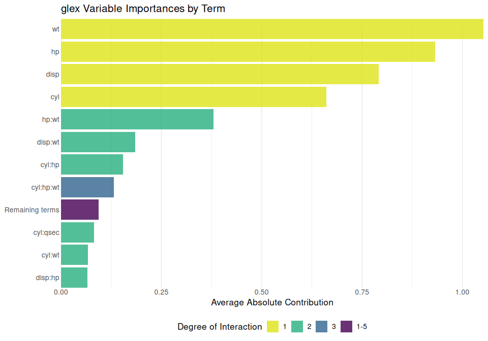
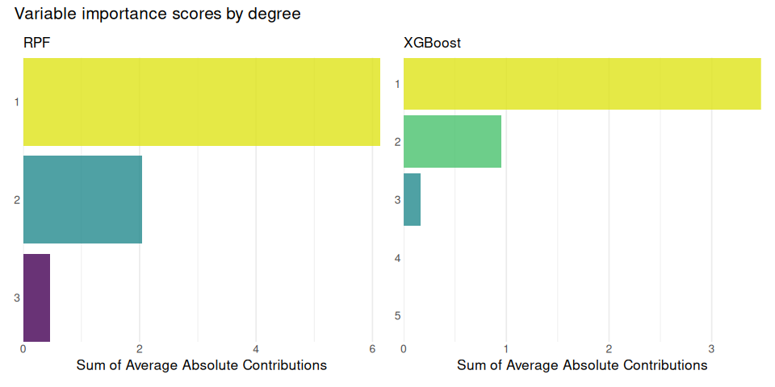
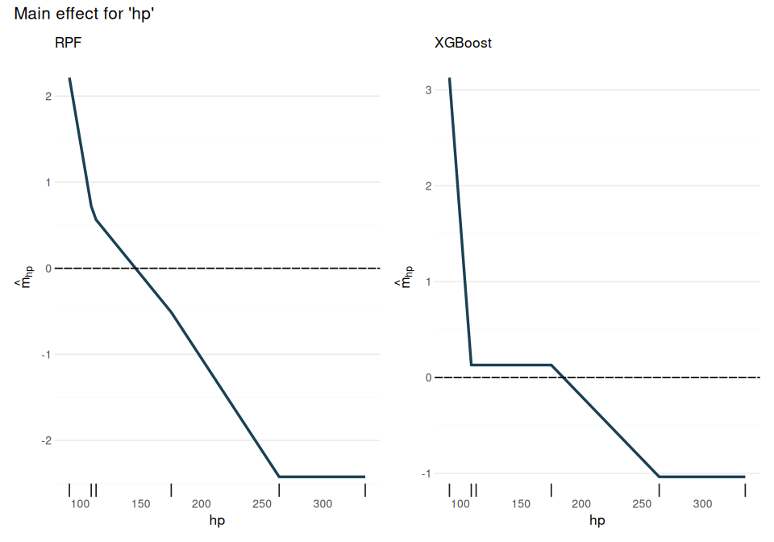
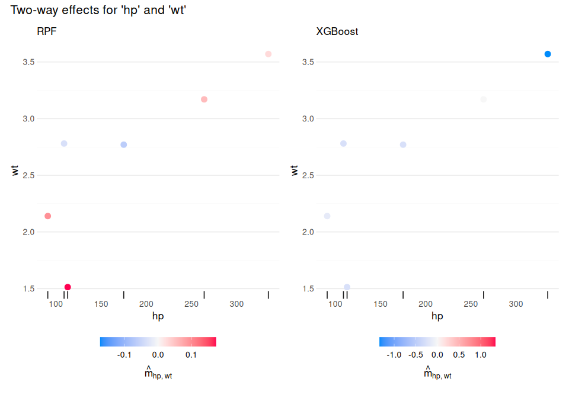
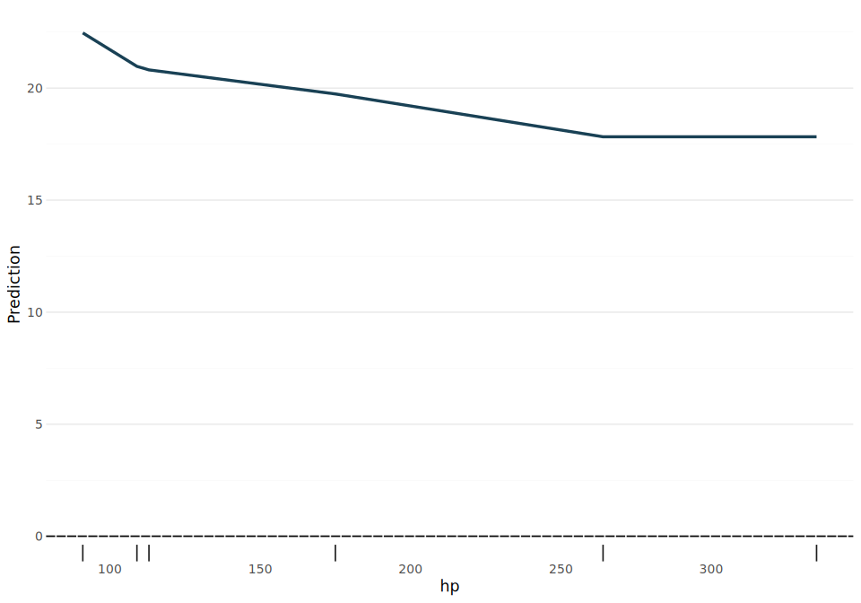
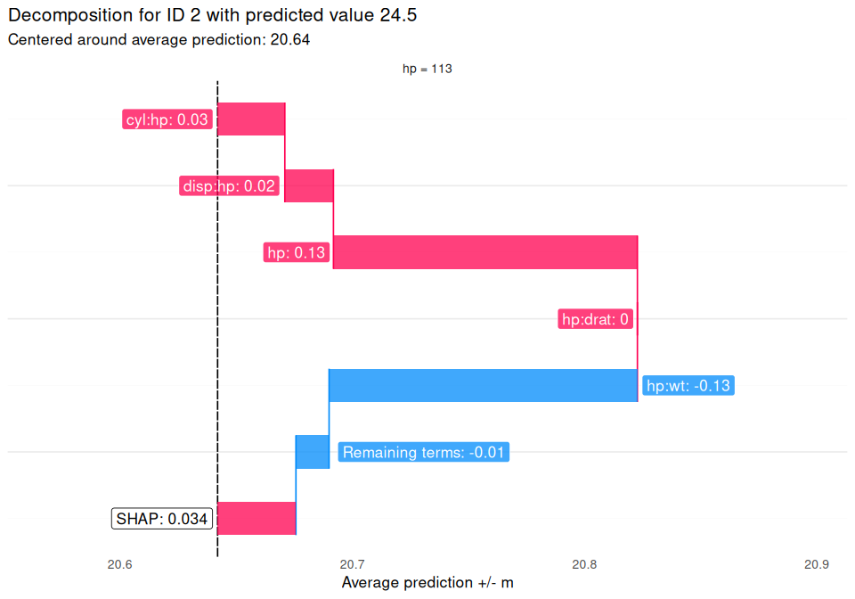

Overview
glex implements global, functional decompositions of tree-based regression and classification models that decomposes them into main effects and interaction effects of arbitrary order. In particular, it can
- compute exact interventional SHAP values (and more generally, q-interaction interventional SHAP, where q is the maximal interaction order present in the model),
- extract partial-dependence-functions (e.g., one dimensional partial dependence plots),
- produce variable‐importance scores for each main term and interaction term (of any order), and
- supports de-biasing by removing components that include protected features.
Under the hood, glex relies on fast algorithms to compute all required partial dependence functions exactly.
For a detailed description of the methodology, see:
See the accompanying paper for more details and exact definitions: “Unifying local and global model explanations by functional decomposition of low dimensional structures” (arxiv, PMLR).
Hiabu, Meyer & Wright (2023).
Unifying local and global model explanations by functional decomposition of low dimensional structures.
arXiv • AISTATS 2023 Proceedings
Liu, Steensgaard, Wright, Pfister, Hiabu (2023).
Fast Estimation of Partial Dependence Functions using Trees.
arXiv
Installation
You can install the development version of glex from GitHub with:
# install.packages("pak")
pak::pak("PlantedML/glex")or from r-universe with
install.packages("glex", repos = "https://plantedml.r-universe.dev")Supported Models
glex currently provides methods for the model classes below.
| Model package | Model class | Regression | Binary classification | Multiclass classification | Link function(s) | Notes |
|---|---|---|---|---|---|---|
xgboost |
xgb.Booster |
Yes | Yes* | Not yet fully supported | Built-in objectives define the link (e.g., identity, logistic/logit, log-link). | * glex() decomposes predictions on the raw margin scale; apply the inverse link to recover response-scale predictions. |
randomPlantedForest |
rpf |
Yes | Yes | Yes | Not applicable | Native support for multiclass terms in plotting and variable importance workflows. |
ranger |
ranger |
Yes | Yes* (probability forests) | Not yet supported | Not applicable | * Requires node.stats = TRUE. For classification, fit with probability = TRUE; ranger predicts class probabilities directly from class frequencies in terminal nodes (no inverse link needed). Multiclass is currently unsupported. |
More tree-based frameworks may be added in future releases. If you have a suggestion, please open an issue on our GitHub repository.
XGBoost with Link Functions
For generalized objectives, XGBoost outputs an additive raw-score (margin) function:
Here, is the global bias term (base_score on the margin scale), and each is the prediction function of tree (its leaf weight for input ). In other words, the XGBoost model output is itself; response-scale prediction is obtained by applying the objective-specific inverse link to that output.glex() decomposes , not . The decomposition is
where is the intercept term, are the functional ANOVA components indexed by feature subsets , and are SHAP values aggregated per feature . This margin equals predict(model, x, outputmargin = TRUE).
Predictions on response scale are obtained by applying the inverse link:
This yields the objective-specific identities:
For custom objectives, XGBoost does not provide a built-in response transform. In that case, run glex() as usual to decompose the raw margin, then apply your own inverse link afterwards to the reconstructed margin, e.g. to gl$intercept + rowSums(gl$m) (or equivalently gl$intercept + rowSums(gl$shap)), to obtain response-scale predictions.
x <- as.matrix(mtcars[, -1])
y_bin <- as.numeric(mtcars$mpg > median(mtcars$mpg))
xg_bin <- xgboost::xgb.train(
params = list(objective = "binary:logistic", max_depth = 3, eta = .1),
data = xgboost::xgb.DMatrix(data = x[1:26, ], label = y_bin[1:26]),
nrounds = 30,
verbose = 0
)
glex_xgb_bin <- glex::glex(xg_bin, x[27:32, ])
# Additive decomposition returned by glex (margin / log-odds scale)
margin_glex <- glex_xgb_bin$intercept + rowSums(glex_xgb_bin$shap)
# XGBoost predictions on test data
pred_prob <- predict(xg_bin, x[27:32, ])
pred_margin <- predict(xg_bin, x[27:32, ], outputmargin = TRUE)
# Apply the inverse link for binary:logistic
prob_from_glex <- plogis(margin_glex)
cbind(pred_prob, prob_from_glex, pred_margin, margin_glex)
#> pred_prob prob_from_glex pred_margin margin_glex
#> Porsche 914-2 0.90160328 0.90160331 2.215168 2.215167
#> Lotus Europa 0.90160328 0.90160331 2.215168 2.215167
#> Ford Pantera L 0.90160328 0.90160331 2.215168 2.215167
#> Ferrari Dino 0.90160328 0.90160331 2.215168 2.215167
#> Maserati Bora 0.07015713 0.07015714 -2.584278 -2.584278
#> Volvo 142E 0.90160328 0.90160331 2.215168 2.215167
max(abs(pred_margin - margin_glex))
#> [1] 1.323593e-07
max(abs(pred_prob - prob_from_glex))
#> [1] 3.020367e-08Binary logistic example (objective = "binary:logistic"):
In this case is log-odds and the inverse link is the logistic map:
XGBoost optimizes logistic loss directly in this margin:
glex() decomposes the margin additively into interaction components indexed by feature subsets :
where intercept is and m stores . Hence:
For SHAP values, glex distributes each interaction term equally across features in that term:
Hence:
Interpretation on this scale is direct: positive components increase log-odds (and therefore probability), negative components decrease log-odds, and an increase of in margin multiplies the odds by .
What’s Included
The examples below use xgboost and randomPlantedForest models:
# Install xgboost from CRAN
install.packages("xgboost")
# ... and randomPlantedForest from r-universe
install.packages("randomPlantedForest", repos = "https://plantedml.r-universe.dev")
library(glex)
# Model fitting
library(randomPlantedForest)
library(xgboost)
# Visualization
library(ggplot2)
library(patchwork)
theme_set(theme_glex())
set.seed(21)Note that xgboost, unlike randomPlantedForest, requires matrix input and does not support categorical predictors.
rp <- rpf(mpg ~ ., data = mtcars[1:26, ], max_interaction = 3)
x <- as.matrix(mtcars[, -1])
y <- mtcars$mpg
xg <- xgboost(data = x[1:26, ], label = y[1:26],
params = list(max_depth = 3, eta = .1),
nrounds = 30, verbose = 0)Using the model objects and a dataset to explain (such as a test set in this case), we can create glex objects for each of the model fits. These objects of class glex are a list containing the prediction components of main and interaction terms ($m), the dataset to be explained with the observed feature values ($x) used to visualize feature effects, and the average predicted value for the model ($intercept). The xgboost method additionally returns the SHAP values ($shap) for each feature in the model.
Both m and shap satisfy the property that their sums (per observation) together with the intercept are equal to the model prediction for each observation:
# Calculating sum of components and sum of SHAP values
sum_m_rpf <- rowSums(glex_rpf$m) + glex_rpf$intercept
sum_m_xgb <- rowSums(glex_xgb$m) + glex_xgb$intercept
sum_shap_xgb <- rowSums(glex_xgb$shap) + glex_xgb$intercept
# Model predictions
pred_rpf <- predict(rp, mtcars[27:32, ])[[1]]
pred_xgb <- predict(xg, x[27:32, ])
# For XGBoost
cbind(pred_xgb, sum_m_xgb, sum_shap_xgb)
#> pred_xgb sum_m_xgb sum_shap_xgb
#> Porsche 914-2 23.84291 23.84291 23.84291
#> Lotus Europa 25.30800 25.30801 25.30801
#> Ford Pantera L 20.71024 20.71024 20.71024
#> Ferrari Dino 20.99034 20.99034 20.99034
#> Maserati Bora 14.89887 14.89887 14.89887
#> Volvo 142E 21.55361 21.55361 21.55361
# For RPF
cbind(pred_rpf, sum_m_rpf)
#> pred_rpf sum_m_rpf
#> [1,] 29.34468 29.34468
#> [2,] 28.28776 28.28776
#> [3,] 18.10135 18.10135
#> [4,] 20.31319 20.31319
#> [5,] 14.80156 14.80156
#> [6,] 23.96188 23.96188Variable Importances
Variable importance scores are calculated for each main and interaction term by calculating the average of the absolute prediction components (m) over the dataset supplied to glex().
vi_rpf <- glex_vi(glex_rpf)
vi_xgb <- glex_vi(glex_xgb)
vi_rpf[1:5, c("degree", "term", "m")]
#> degree term m
#> <int> <char> <num>
#> 1: 1 wt 1.4893211
#> 2: 1 disp 1.2539334
#> 3: 1 hp 1.1017759
#> 4: 1 cyl 0.7172987
#> 5: 1 drat 0.5465836
vi_xgb[1:5, c("degree", "term", "m")]
#> degree term m
#> <int> <char> <num>
#> 1: 1 wt 1.4145524
#> 2: 1 disp 1.0614659
#> 3: 1 hp 0.6307429
#> 4: 2 hp:wt 0.5823452
#> 5: 3 cyl:hp:wt 0.3538588The output additionally contains the degree of interaction, which can be used for filtering and aggregating. Here we filter for terms with contributions above a threshold of 0.05 to get a more compact plot, with terms below the threshold aggregated into one labelled “Remaining terms”:
p_vi1 <- autoplot(vi_rpf, threshold = .05) +
labs(title = NULL, subtitle = "RPF")
p_vi2 <- autoplot(vi_xgb, threshold = .05) +
labs(title = NULL, subtitle = "XGBoost")
p_vi1 + p_vi2 +
plot_annotation(title = "Variable importance scores by term")
We can also sum values within each degree of interaction for a more aggregated view, which can be useful as it allows us to judge interactions above a certain degree to not be particularly relevant for a given model.
p_vi1 <- autoplot(vi_rpf, by_degree = TRUE) +
labs(title = NULL, subtitle = "RPF")
p_vi2 <- autoplot(vi_xgb, by_degree = TRUE) +
labs(title = NULL, subtitle = "XGBoost")
p_vi1 + p_vi2 +
plot_annotation(title = "Variable importance scores by degree") 
Feature Effects
We can also plot prediction components against observed feature values, which admittedly produces more interesting output with larger, more interesting datasets.
p1 <- autoplot(glex_rpf, "hp") + labs(subtitle = "RPF")
p2 <- autoplot(glex_xgb, "hp") + labs(subtitle = "XGBoost")
p1 + p2 +
plot_annotation(title = "Main effect for 'hp'")
p1 <- autoplot(glex_rpf, c("hp", "wt")) + labs(subtitle = "RPF")
p2 <- autoplot(glex_xgb, c("hp", "wt")) + labs(subtitle = "XGBoost")
p1 + p2 +
plot_annotation(title = "Two-way effects for 'hp' and 'wt'")
Currently there is support for plots of interactions up to the third degree, including continuous and categorical features. Unfortunately, three-way interactions of continuous features are not supported yet.
Note that these main effect plots correspond to PDP plots, where the latter are merely the main effect plus the intercept term:
plot_pdp(glex_rpf, "hp")
Decomposition of Individual Predictions
Finally, we can explore the prediction for a single observation by displaying its individual prediction components. The SHAP value is the sum of all of these components and serves as a reference value. For compactness, we only plot one feature and collapse all interaction terms above the second degree into one as their combined effect is very small.
p1 <- glex_explain(glex_rpf, id = 2, predictors = "hp", max_interaction = 2) +
labs(tag = "RPF")
p2 <- glex_explain(glex_xgb, id = 2, predictors = "hp", max_interaction = 2) +
labs(tag = "XGBoost")
p1 + p2 & theme(plot.tag.position = "bottom")